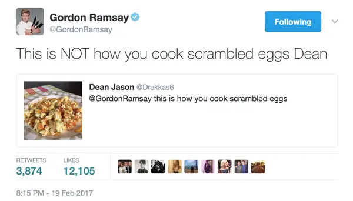

Fig 1. Gordon Ramsay when he guest judge on Masterchef Australia in Series 10, Ep. 15-18 [6]
Why We Made This Website

Fig 2. Example of the type of responses people got from Ramsay on Twitter.[13]
For Our final project we were tasked with creating a "Resume Web Page" to demonstrate our skill we learnt through this semester. While we could have either made one about us or a fictional person, we wanted to do something a little more fun and decided to make a Resume for Gordon Ramsay
Some Might be confused as to why we decided on this particular Chef, but we find that he has such a varied body of work that there would be plenty of information on him to fill out or content for this project.
From earning Michelin Stars from his cooking(he currently has 7), to yelling at contestants on Hell's Kitchen. It's hard to name a cooking show he hasn't been on. It's hard to say what is more popular, his harsh burns to Master Chef contestants or the touching moments from Junior Master Chef. Both is probably the right answer.
If you are really brave you can ask him to rate your food on tiktok or Twitter.
All this to say Gordon Ramsay is a great subject matter for this project.